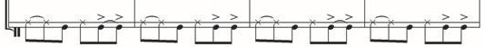
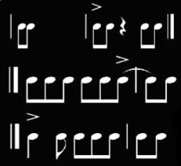

Aspectos Musicales que permiten el diálogo de las Músicas Tradicionales con otras Prácticas
En el universo musical contemporáneo irrumpen cada vez con mayor fuerzar las expresiones artísticas construidas a partir de elementos pertenecientes al acervo tradicional. Su innegable proyección como uno de los más promisorios campos del mundo musical es prueba fehaciente de la vigencia de las músicas tradicionales como códigos comunicacionales representativos de realidades históricas, sociales y territorialidades únicas, con profunda repercusión en las sociedades contemporáneas.
A manera de libros abiertos que brindan infinidad de textos para los músicos, los arreglistas y los públicos, las músicas tradicionales son reserva y fuente de nuevas sonoridades, verdaderos bancos genéticos para el desarrollo de las músicas; América Latina en general y nuestro país en particular, tienen en ellas un enorme capital cultural y sonoro.
Además de su valor intrínseco, las músicas tradicionales son también expresiones generadoras de valores: en la medida en que esas músicas permiten a las comunidades reconocerse en marcos específicos de temporalidad (historicidad) y espacialidad (territorialidad), sustentan elementos de nacionalidad e identidad cultural y alimentan el diálogo y la convivencia basados en el respeto a los otros y en el reconocimiento de la diversidad” (Ministerio de Cultura, 2003, p.6).
Las escuelas de música tradicional del Eje pacífico Norte por ejemplo —a la manera de las de los otros diez ejes territoriales del país—, constituyen procesos y escenarios de formación y práctica musical con los cuales se busca la dignificación, la significación y el reconociemiento de las músicas tradicionales. Las músicas son concebidas como procesos, productos y experiencias de las personas que las construyen y las han cultivado generación tras generación. Las músicas tradicionales se conciben como elementos fundamentales y activos en la identidad nacional, dentro de una pluralidad cultural rica y diversa (Valencia, 2006, Valencia 2007 citado por Salazar, 2014, p. 30).
Las músicas tradicionales obedecen entonces a sonoridades que fluyen de manera espontánea a partir de constructos estructurados históricamente y son propias de contextos ligados a costumbres, tradiciones, creencias y apropiaciones naturales de mundo. Estas músicas de la erudición popular tienen una función social importante en las comunidades como medio de expresión, comunicación y vínculo entre el pasado y el presente, que se manifiesta en sus festividades populares y en sus ritos ancestrales, entre otras actividades del quehacer de los pueblos. Estas músicas viajan entre lo urbano y lo rural, generando interfluencias que permiten diálogos con otras músicas para la creación de nuevas músicas mezcladas o cruzadas. En estas dinámicas culturales se produce, además de la mezcla de músicas, la integración de formatos musicales que se consolidan con las prácticas en los diversos espacios sociales y comunitarios; esto permite que la comunidad apropie y asuma las mismas como elemento identitario propio de cada contexto. Apartir de alli se establecen refrencias desde la música hacia el territorio, por ejemplo: músicas vallenatas, músicas llaneras, músicas chocoanas, entre otras.
En la práctica cotidiana de las músicas realizada con libertad a través de los formatos que integran practicantes de distintos niveles, se ponen en juego aspectos técnicos, socio-afectivos y estéticos, que generan un fenómeno musical integral. Este espacio de construcción compartida requiere el concurso de todos los participantes que aportan sus saberes en general, desde el conocimiento técnico, las competencias instrumentales y todo el talento disponible; instancias que implican la apropiación de las músicas en procesos sistemáticos. En este sentido la integración es un espacio relacional, de vínculo, en el que todos necesitan y aportan. Además, genera compromiso y permite la comprensión del otro y de lo que este hace, con todo lo que ello implica.
Ahora bien, desde el aspecto técnico musical, se trabaja la comprensión de los elementos fundamentales de la música (ritmo, melodía, armonía), las estilísticas a nivel interpretativo e improvisatorio, las formas de creación y comprensión de códigos y lenguajes de las músicas y los formatos.
Las once Cartillas de Iniciación en Músicas Tradicionales publicadas por el Ministerio de Cultura para los ejes correspondientes, proponen una ruta formativa que asimila los procesos que se dan en las músicas tradicionales a nivel comunitario y su implementación en las escuelas con las especificidades necesarias. “Con base en la noción de las músicas como sistemas y sus maneras tradicionales de apropiación-reproducción se definen cuatro niveles de estructuración de los sistemas musicales, niveles que se corresponden con desempeños musicales-instrumentales específicos: ritmo-percusivo, ritmo-armónico, melódico e improvisatorio” (Ministerio de Cultura, 2015, p.11). En estos materiales es posible estudiar las músicas en forma organizada para consolidar una verdadera apropiación de las mismas y sus repertorios, además de propuestas diversas que son susceptibles de integrarse a los distintos niveles de formación propuestos en los lineamientos: iniciación, básico, y medio.
Es necesario mantener la coherencia entre los distintos programas o proyectos que apuntan al desarrollo de las líneas de política del Plan Nacional de Música para la Convivencia que se han ido construyendo desde su inicio (ejes de músicas tradicionales, territorios sonoros, lineamientos de formación, entre otros) y que, específicamente en la formación, mantienen una línea de continuidad a lo largo de los distintos documentos de lineamientos que desde el 2015 integran las siguientes categorías que los orientan: sentidos, ejes formativos, formatos, lógicas culturales y diálogos creativos.
Desde este enfoque construido para las músicas tradicionales, se propone a continuación revisar algunos de sus elementos estructurantes, sin ánimo de ser exhaustivos ya que parte de ellos se encuentran también en las cartillas mencionadas y en los lineamientos de los niveles anteriores a este. A continuación, se presentan los aspectos técnicos, rítmicos, melódicos y armónicos que entran en diálogo con otras músicas.
- Desde lo armónico
En las músicas tradicionales, por lo general, los desarrollos armónicos son básicos, ya que muchos de sus repertorios corresponden a una construcción inicial, donde es más importante el ritmo y la melodía que la armonía. Sin embargo, para lograr la integración y dialogo de saberes entre músicas académicas y populares urbanas, es importante analizar desde los rudimentos armónicos cualquier obra o melodía, entendiendo que toda melodía contiene una armonía implícita.
Al realizar la integración de prácticas con las músicas académicas como populares urbanas, se atenderán temas específicos referidos a los intervalos, escalas, acórdica, cifrados y códigos representacionales de las progresiones armónicas, cadencias, arreglos musicales, frases y secciones de la obra, tono y modo, disposición por familias instrumentales, background, arreglos en bloque, concepto general de acompañamiento y ensamble. Las músicas tradicionales, en algunas zonas del país, han profundizado la relación con sistemas escritos no convencionales de representación de las progresiones armónicas, como es el uso del cifrado americano. Por otra parte, la música tradicional toma elementos del lenguaje de las músicas académicas y lo condiciona a su manera. Por ejemplo: al acorde del cuarto grado de la escala lo denominan tercera. Al acorde de quinto grado lo denominan segunda, entre otros. Ejemplo de cadencias I – V- I; I-IV-V; I – II- II7- V7-I.
Los desarrollos armónicos, a pesar de ser simples en su mayoría, en algunas ocasiones presentan formulas o progresiones armónicas poco usuales en otras músicas; por ejemplo, en algunas músicas tradicionales encontramos funciones armónicas como: la menor (Am), do mayor (C), fa mayor (F), la menor (Am), o Am – G7- Am – E7- Am. En muchos casos encontramos el uso del acorde de subtónica Am – G – Am; Im – VII.
Comúnmente, las texturas homofónicas están presentes en estas músicas, melodía con acompañamiento y las polifonías vocales; por ejemplo, en los rituales del Pacífico, en los cantos polifónicos de alabaos, encontramos una serie de microtonos que lo diferencian de otros cantos de origen europeo y que lo hacen particular, teniendo como centro de referencia el estilo antifonal de manera permanente (coro – antifonero). Esta pregunta y respuesta permite comunicarse de manera sencilla con otras músicas o formas convencionales de las músicas académicas y urbanas.
Un ejemplo de esto, es la pieza musical del Pacifico La vaca loca, torbellino chocoano reconocido y usado en las festividades de los pueblos:
La vaca loca. Torbellino Chocoano. Transcripción: Leonidas Valencia.
La pieza musical La vaca loca, en su primer momento presenta una frase monótona en donde lo importante es la función armónica que aplica Im–III. En la frase siguiente, aparece un tipo de pregunta y respuesta que está encadenada armónicamente con la primera frase, completando un círculo armónico Im – III – VI – V7 – Im; y en la tercera frase, al igual que la primera, con una frase monótona que ejerce la función armónica auténtica de estas músicas folklóricas V7-I.
Esta melodía presenta un tipo rítmico acéfalo en su inicio. Los desplazamientos melódicos están soportados en segundas consecutivas, haciéndola una melodía compacta e interesante. El rango está comprendido entre la nota mi grave y fa (9a). Es de tipo tonal en modo menor, con círculo armónico y una estructuración ternaria y simétrica.
Los esquemas rítmicos son:
Igual para el primer y segundo período.
En esta tercera frase, el tipo rítmico es el tético, que se diferencia de las frases anteriores al construirse en estructura A, A, B (rítmicamente).
Respecto a la tonalidad, se debe asegurar una definición tonal respetando la del formato original de la interpretación de la obra, por lo tanto, requiere de una comprensión y respeto del otro, del autor, de la cosmovisión de unas melodías que son territoriales y cuyas músicas responden a una espiritualidad que debe ser comprendida y respetada.
En las músicas del Pacífico Norte, por ejemplo, existe un grupo de tonalidades de mayor uso, entre ellas las mayores: do mayor (C) , sol mayor (G), si bemol (Bb), fa mayor (F) y re mayor (D). En las tonalidades menores estan: do menor (Cm), re menor (Dm), sol menor (Gm), mi menor (Em) y la menor (Am).
Habrá por supuesto, puntos de encuentro y divergencia en lo técnico melódico, alturas, melismas, sonidos guturales, inflexiones vocales, “peladas” de nota con instrumentos musicales, matizaciones y regulaciones que deben ser analizadas desde cada código o lenguaje usado por las músicas tradicionales, académicas y populares urbanas. Por ejemplo, la afinación de muchos instrumentos de músicas tradicionales, por su construcción artesanal y oído natural de los constructores en sus contextos naturales, presenta una medición de frecuencias distintas a las convencionales; y la presencia de escalas no propias del sistema eurocéntrico, que permite percibir una diversa variedad de afinaciones de estos instrumentos musicales como la marimba, gaitas largas y cortas, kenas, marimbulas, flautas de millo y carrizo, entre otros. Esta gran diversidad, constituyen parte de la riqueza tímbrica de nuestro país.
Estas supervivencias pueden dialogar con otros instrumentos y participar en la conformación de nuevos formatos, o formar parte de integraciones que permiten valorar, entender y comprender las riquezas con las que cuenta el país, asi como la disposición que que se debe tener desde los diversos espacios de formación y práctica de las músicas en cualquier categoría o subdivisión. El diálogo de estas músicas y formatos de música tradicional con los demás existentes (bandas, orquestas, coros, etc.), de alguna manera permite entender la variedad de elementos y expresiones culturales vivas en Colombia, por lo tanto, es de alta importancia su reconocimiento y vitalización desde la comprensión, el respeto, la visibilización y el estudio de estas supervivencias musicales en diálogo permanente.
- Lo melodico
Las músicas tradicionales, en los desarrollos melódicos, usan escalas tonales y modales, lo que permite realizar diálogos con otras músicas y formatos académicos y urbanos. En las dinámicas usan reguladores, matices fuertes, débiles y suaves. Sus melodías o piezas musicales se dividen en partes que se signan como: introducción y registro, tema, improvisación (que por lo general, posee coro y pregones en el nivel vocal e instrumental), mambos , estribillos, moña y final. También tienen un carácter repetitivo, se usan ostinatos en la interpretación de instrumentos de percusión (por ejemplo, en la marimba), codifican como requinta a los registros agudos y bordoneos para los registros graves del instrumento. En lo vocal, usan melismas o sonidos guturales de difícil grafía, lo que requiere un tratamiento específico y enriquecedor al dialogar con otras músicas y formatos.
Las músicas tradicionales se deben en gran medida a sus repertorios, que son diversos: melodías sin texto, melodías con texto, de carácter sacro o fúnebre, festivo y de adoración, como también sublime o de exaltación del contexto. Desde el punto de vista melódico, las músicas tradicionales pueden dialogar con las músicas académicas y populares urbanas y sus formatos: en la exploración de estos repertorios y en el uso de textos y melodías de estas músicas; teniendo en cuenta las alturas sonoras, técnicas de calentamiento vocal e instrumental, estilísticas y tímbricas del nivel interpretativo, la organología a usar o roles instrumentales en la interpretación. Por ejemplo, en un ensamble de una orquesta y un conjunto de currulao interpretando Mi Buenaventura, el rol melódico lo puede conservar la marimba, pero también puede asignársele a un saxofón tenor o a un oboe.
- Lo rítmico
Desde las músicas tradicionales se propone la comprensión de las claves rítmicas, atendiendo sus regímenes acentuales, su hábito y experiencia, entendido como la reducción de un conjunto de relaciones complejas a una unidad perceptible como tal; pero también, comprendiendo la percepción de configuraciones instaladas que ha generado jerarquización de bases rítmicas, construcción antifonal, regularidad y simetría. Como ejemplo, podemos citar el entramado rítmico que se construye al escuchar la sumatoria de sonidos que constituyen la base de la cumbia aportados por el llamador, la tambora, el alegre y el maracón.
Las músicas tradicionales tienen códigos rítmicos que son células vitales de identificación para estructurarse, como en el ejemplo de cumbia del párrafo anterior. Desde estos códigos rítmicos, se determinan bases para el entendimiento con las músicas académicas y con las populares urbanas; por ejemplo: el uso de una melodía sobre una base rítmica determinada, permite hacer una exploración entre músicas desde diversos formatos, es decir, la melodía de una misma cumbia puede ser interpretada por una banda de vientos o de rock, por un conjunto de cuerdas andinas o por un quinteto de vientos.
En las músicas tradicionales, los códigos y las bases rítmicas tienen unos regímenes acentuales particulares, que responden a las formas o maneras de expresar y sentir las músicas propias, y que se pueden articular con acentuaciones de algunas músicas académicas y populares urbanas, como la práctica integrada de un conjunto de chirimía con una orquesta, en la interpretación de un aguabajo, música del Chocó. Este ejemplo permite experimentar cómo, la base ritmo-percusiva del formato chirimía (tambora, redoblante y platillos de choque), teniendo en cuenta que el código o base rítmica de dicha música, permite la exploración de melodías de otras músicas que puedan funcionar, superponiéndolas con la base rítmica del aguabajo en cuestión.
En el diálogo y comprensión se analizan temas como: la historia de dicha música, sus usos sociales, variaciones rítmicas, regímenes acentuales generales, entre otros. En el ejercicio de integración de músicas y formatos desde el aspecto rítmico, se analiza qué instrumentos y códigos rítmicos, tanto de las músicas académicas como urbanas, pueden configurarse en la construcción como ejercicio de creación que permite encontrar nuevos códigos rítmicos y que conlleva a nuevas creaciones; estas creaciones abonan el terreno de la investigación y estimulan la producción en las escuelas de música.
Las músicas tradicionales se amparan en claves rítmicas construidas o asimiladas en los procesos de hibridación musical, desembocando en la apropiación, reproducción y exposición de las comunidades. Por ejemplo: en las músicas del pacifico con supervivencias afro, encontramos dos matrices binarias heredadas de la cultura Bantú y Yoruba; en estas claves —entendidas en este contexto como células rítmicas básicas— están soportadas las denominadas músicas de estos pueblos afrodescendientes.
Las cartillas de músicas tradicionales del Ministerio de Cultura, citadas en los documentos de lineamientos de los diferentes niveles, viabilizan la posibilidad de diálogo entre músicas. Al explicarse en ellas las bases rítmicas y regímenes acentuales de los distintos géneros ejemplificados en los roles de acompañamiento individualizados con transcripciones detalladas, los músicos de diversas áreas de formación, previo estudio cuidadoso y práctica pueden incorporar estos elementos en sus propuestas creativas e interpretativas.
Las claves en las músicas tradicionales:
Tabla1.Las claves o estructuras rítmicas en las músicas tradicionales.
| Matriz | Tipo | Variaciones | Ejemplo |
|---|---|---|---|
| Yoruba | Binaria (subdivisión ternaria) | Redoblante Abosao | |
| Bantú | Binaria | Cinquillo | Bunde saporrondón
Tambora Saporrondón |
En las músicas tradicionales, las estructuras rítmicas determinan los diferentes géneros y permiten integrar diversas variaciones, responden a codificaciones regionales que se usan para identificar toques originarios propios y diferenciar las acentuaciones rítmicas cracacterísticas de los territorios. Por ejemplo, las formas de percutir o tañir los instrumentos de percusión, las maneras de soplo de los pitos o instrumentos de viento y los rasgados o charrangueos de los instrumentos de cuerdas según el sector. Es así como, en el Pacífico Sur, donde predomina el conjunto de currulao (conformado por marimbas, cununus o cunos, tamboras, guasas y voces), las tímbricas varían internamente según varios aspectos:
- Si la comunidad está asentada a orillas de un rio tiene un tipo de expresión vocal e instrumental particular, donde es probable que el entorno ambiental incida en ella, produciendo un canto dulce y tranquilo. Asi mismo, es posible que la proximidad al mar, por su inmensidad y fortaleza, motive una ejecución más fuerte y sonora.
- Por otra parte, se presentan variaciones tímbricas de acuerdo al material con que construyen sus instrumentos, referido esto al tipo de chonta usado en la construcción de la marimba (palma de chontaduro – palma de mil peso – palma de corozo). Igual ocurre con los vasos de madera de las tamboras, los cueros de los animales que se usan como parche para estas y los cununos. Todas estas particularidades son elementos diferenciadores de tímbricas, lo que implica una relación íntima con la naturaleza y la acción de construcción artesanal de los instrumentos musicales, incidiendo también en las escalísticas y frecuencias en la producción sonora.
Las músicas tradicionales colombianas, por lo general, están determinadas por células rítmicas con particulares acentuaciones, pulsos, claves, trastoques —nombre regional para las acentuaciones en tiempos débiles del compás—, entre otros elementos, que se evidencian en la cotidianidad o en el quehacer musical de las comunidades o pueblos. Estas características propias surgen a partir de una amalgama sonora, tras el encuentro de las culturas afro, indígena y europea. Los procesos de mezcla o mestizaje cultural que caracterizan estas músicas, hacen presencia en las particularidades del sistema métrico, por ejemplo:
- El régimen acentual anacrúcico constante en las melodías y el tético, presente en menos proporción:
- En el desarrollo de las percusiones se presentan a menudo trastoques: 
- Lo Formal
Por otra parte, las formas musicales utilizadas en las músicas tradicionales, generalmente son binarias y ternarias, desde donde clasifican sus géneros o músicas propias, encontrando músicas de aguabajo, tamborito, cumbia, currulaos, pangos, arrullos, alabaos, patacoré, sones y porros, entre otros, según el sector. En el desarrollo de estas formas, cumple un papel preponderante la improvisación libre; esta permite dar rienda suelta a la creación, al repentismo, al virtuosismo o técnicamente, al conocimiento y manejo del instrumento o la voz; por ejemplo, las cantaoras del Pacífico con sus sonidos guturales y melismas, resoplidos, coros nasales, pregones, entre otros.
El ejemplo de la pieza musical “Guitarra desbaratada” en aire de abosao del Pacifico colombiano:
Guitarra Desbaratada. Abosao Tradicional del Pacífico. Transcripción: Leonidas Valencia Valencia
La estructura es de repetición por sección, como ejemplo reafirmante del párrafo expuesto. Excepcionalmente presenta un puente llamado A1, que extrañamente se expone en este tipo de melodía, y el bloque B, que presenta una frase completa de pregunta y respuesta inmediata diferente de A, donde el antecedente toma dos compases y el consecuente dos de igual manera. En general, presenta una fluctuación en la melodía ascendente – descendente.
La pieza musical es de carácter tonal. Si se observa el primer período A, presenta una frase conclusiva, donde el antecedente es reiterativo y un motivo conclusivo del primer período.
Se observa un elemento característico en el cierre del motivo antecedente que es común al cierre del motivo consecuente, a diferencia del inicio anacrúcico del antecedente y el tético del consecuente. El puente A1 presenta una variación rítmica del motivo consecuente del primer período.
A. consecuente A1. antecedente A1. Consecuente.
Las células conclusivas de los tres esquemas son totalmente diferentes. En el segundo período B, se presenta una nueva disposición rítmica pero similar, tanto en el motivo antecedente como en el consecuente, mostrándose la variación melódica mas no rítmica:
Periodo B.
Este ejemplo deja ver la fuerte influencia rítmica en la melodía, células estructuradas bien definidas sobre una base rítmica simétrica, en donde su definidor es la cadencia auténtica muy propia de estas músicas tradicionales. El texto literario de este abosao se basa en la conversación de alguien hablando con su guitarra:
Guitarra desbaratada I II
Ay guitarra, ay guitarra
Ay guitarra cuando me fuire (bis)
Te dejé bien encordara (bis)
Coro: Chon’ pan de vas – Pa`n de Serafina (bis)
Ay ahora, ay ahora
Ay ahora que vengo aquí (bis)
Te encuentro desbaratada (bis)
Coro: Chon’ pan de vas – Pa`n de Serafina (bis)
La pieza musical Guitarra desbaratada comprende dos pasos en la melodía. el polo inferior “re” y el polo superior “sol”. La melodía se mueve por intervalos de segundas y terceras consecutivas, ofreciendo una riqueza melódica, excepto un giro de octava que se produce en el segundo periodo B. Las células rítmicas más importantes son:

Con el propósito de ampliar el conocimiento sobre las músicas tradiciones del eje centro, se expondrán las estructuras rítmicas más representativas de estas músicas, las características de las bandolas y tiples, su afinación y por último, algunas consideraciones pertinentes sobre el diálogo del formato de cuerdas pulsada del Eje Centro con otras músicas.
- Músicas Tradicionales Eje Centro
- Estructuras rítmicas características de las Músicas del Eje Centro
A continuación, se describen los patrones rítmicos de algunos de los ritmos más representativos tales como el pasillo, el bambuco, la guabina y la danza, con su respectivo patrón rítmico para la guitarra y el tiple.
• Pasillo
Ritmo de pasillo para la Guitarra
Ritmo de pasillo para el Tiple
• Bambuco
Ritmo de bambuco para la Guitarra
Ritmo de bambuco para el Tiple
• Guabina
Ritmo de guabina para la Guitarra
Ritmo de guabina para el Tiple
• Danza
Ritmo de danza para la Guitarra
Ritmo de danza para el Tiple
Los lineamientos para la formación musical de nivel básico y nivel medio, contienen algunos otros referentes, acerca de los diferentes contextos de las músicas tradicionales
- Características y afinación de la bandola y el tiple
Se presenta a continuación, una descripción de las características técnicas de los principales instrumentos del formato de estudiantina: la bandola y el tiple. De la guitarra no es necesario hacer una descripción debido a que es un instrumento adaptado y apropiado por gran cantidad de músicas.
Bandola:
La bandola tiene 6 órdenes y puede variar entre 16 o 12 cuerdas, distribuidas de la siguiente manera:
-
Para la bandola de 16 cuerdas la distribución es de cuerdas dobles en los órdenes graves (6ta y 5ta) y triple para las demás (4ta, 3ra, 2da y 1ra).

Afinación de la bandola de 16 cuerdas
-
Para la bandola de 12 cuerdas, la distribución es de cuerdas dobles en los seis órdenes
Afinación de la bandola de 12 cuerdas

El trimple
Instrumento de 12 cuerdas metálicas dividido en cuatro ordenes triples. Posee la misma afinación que las cuatro primeras cuerdas de la guitarra (re, sol, si y mi). Su principal característica es que tres de sus ordines están octavados (re, sol y si).
Afinación del tiple
Consideraciones sobre el diálogo con otras músicas, desde las cuerdas pulsadas de las músicas tradicionales del eje centro
Las cuerdas pulsadas encuentran gran valor social en la facilidad en que se puede adquirir una guitarra o un tiple. Son instrumentos accesibles que el estudiante adquiere como sus instrumentos propios además de que sabe tratarlos y mantenerlos. Por lo anterior, las orquestas de cuerdas pulsadas tienen mayor facilidad de conformarse y permanecer en tiempos en que el apoyo institucional o gubernamental sea escaso. De otra parte, aprender instrumentos armónicos como los antes mencionados, ofrece una gran ventaja a los maestros y estudiantes para la realización de arreglos musicales de cualquier formato, incluyendo bandas, coros y ensambles de todo tipo.
Los ensambles con cuerdas pulsadas pueden ser muy variados y útiles para todo tipo de músicas, ya que estas no tienen límite y, como en todos los trabajos musicales, la motivación musical con las nuevas generaciones abre caminos de exploración hacia el mundo; esto ha generando una mayor riqueza musical a las músicas y a los formatos tradicionales de cuerdas pulsadas, además de que ha conducido al aporte de bondades en la formación de seres humanos.
Las cuerdas pulsadas también han transitado constantemente con las músicas urbanas: desde el Rock con bandola eléctrica, hasta la salsa con tiple, emulando la sonoridad del cuatro puertorriqueño o el tres cubano. A su vez, el diálogo con músicas tradicionales de diferentes regiones es también algo común al interpretar cumbias, porros, joropos o currulaos, los cuales se escuchan en diferentes encuentros y festivales cada vez con mayor frecuencia.
En cuanto al repertorio de música tradicional, este es perfectamente adaptable a cualquier formato de música académica como banda, orquesta o coro. En las últimas décadas se ha vuelto común escuchar dichos formatos interpretando pasillo, bambucos, danzas del repertorio tradicional u obras originales basadas en estos aires para dichas formaciones.
Con relación a los repertorios de músicas tradicionales interpretados por formatos de músicas urbanas, no ha sido tan común este diálogo, sin embargo, es perfectamente adaptable el repertorio tradicional a formatos como conjunto de música tropical o incluso a bandas de rock y pop.
Músicas tradicionales de cuerdas pulsadas. Ejes centro - oriente y llanero.
- Lo armónico
Respecto al eje centro-oriente, salvo el torbellino (que sigue una estructura fija tónica-subdominante-dominante) los demás géneros se desarrollan armónicamente a través de estructuras definidas por el compositor, sin ceñirse a progresiones fijas, salvo aquellas determinadas en las reglas de la armonía tonal respecto a la dicotomía tensión-relajación; en las exploraciones más contemporáneas o aquellas suscritas a alguna otra práctica tradicional o popular fuera del eje (músicas del sur del continente, estadounidenses o europeas), es posible encontrar recursos armónicos de la dimensión de lo modal.
En contraste con lo anterior, el desarrollo armónico del eje llanero es posiblemente uno de los más complejos dentro del universo de las músicas tradicionales. A grandes rasgos, se pueden enunciar las siguientes categorías, siguiendo un orden aproximado de evolución a nivel de tempo - carga intencional:
- Cantos de trabajo: melodías construidas sobre un grado armónico (cantos de arreo) o dos, usualmente en relación tónica - dominante (cantos de ordeño) y que usualmente no incluyen instrumentos acompañantes.
- Tonadas: usualmente inspiradas a nivel tímbrico y temático en la categoría anterior. Son composiciones cuyo desarrollo armónico involucra los grados de tónica, subdominante y dominante (con ocasionales tonicalizaciones del IV y V grado) a criterio del compositor. Su máximo cultor hasta el momento ha sido Simón Díaz.
- Pasajes: composiciones concretas que cuentan con un desarrollo temático melódico más complejo que en la categoría anterior, y que, a nivel armónico, además de los tres grados que típicamente utilizan las tonadas, puede hacer uso de otros recursos (tonicalizaciones, intercambios modales) en mayor o menor medida, dependiendo de la época en la que haya sido compuesto el pasaje.
- Golpes: composiciones concretas que son nominadas con elementos del contexto particular llanero (animales, nominaciones poéticas), que en la mayoría de los casos son parte activa de la práctica popular y que a nivel armónico definen la sonoridad más característica del joropo. Usan una amplia variedad de grados y recursos armónicos: los más simples utilizan solamente dos grados armónicos (como el Gavan o la Paloma), y los más complejos pueden utilizar todos los grados armónicos de la tonalidad, interconectados a partir de varios recursos (como el Gavilán, o el golpe de Esmeraldas). En algunos casos, la variedad de recursos utilizados genera la sensación de bitonalidad.
Es pertinente aclarar que los golpes originalmente nacen como pasajes y que, en algunos casos, el grado de reconocimiento y apropiación que van logrando entre el gremio llanero determina su transformación a golpe.
- Lo melódico
Teniendo en cuenta como generalidad para los ejes centro-oriente y llanos que el comportamiento melódico no dista mucho de otras prácticas tradicionales en cuanto a sus características interválicas básicas (uso de recursos como grado conjunto, arpegios y paralelismos-intervalos de tercera o 6ta, entre otros), hay que decir que el rol melódico puede llegar a jugar un papel absolutamente determinante en la práctica, puesto que para algunos géneros constituye un sello identitario muy específico, que puede ofrecer, a quien escucha, datos concretos de su nominación, de su armonía, de su localización geográfica específica (y por tanto, de la comunidad de la cual proviene), o incluso del intérprete o compositor que la creó.
Desde un punto de vista analítico de carácter integrador, podríamos proponer dos tipos de comportamiento melódico:
Tipo A: aquellas melodías que se suscriben desde la práctica a una composición específica que regularmente deviene en una estructura formal tipo canción. Pertenecerían a ésta categoría los siguientes géneros:
- En el eje centro-oriente: rumba criolla, bambuco, pasillo, guabina canción, complejo de la carranga (merengue carranguero, merengue joropiao, rumba).
- En el eje de los llanos: tonadas y pasajes.
Tipo B: aquellas melodías que habiendo nacido como composiciones específicas, tuvieron un grado de apropiación tan amplio en la comunidad que poco a poco, pasando a formar parte de la práctica cotidiana de las comunidades, fueron dejando de ser melodías y pasaron a convertirse en melotipos: “moldes melódicos” que cada intérprete puede re-diseñar en el ejercicio interpretativo de acuerdo a su conocimiento particular sobre recursos improvisativos aplicados al género, o bien sobre motivos melódicos específicos asociados al género que durante una interpretación se pueden intercalar, uno tras de otro, dependiendo de su estructura y de la pericia del intérprete. Pertenecerían a ésta categoría los siguientes géneros:
- En el eje centro-oriente: torbellino, que cuenta con melotipos específicos de complejidad interpretativa diversa, algunos de los cuales son de uso exclusivo del requinto y otros son la enunciación melódica de una canta específica; en éste caso, dicha enunciación se interpretará como llamado al dueto guabinero.
- En el eje de los llanos: cantos de trabajo y golpes, cuyas melodías no solo son altamente reconocibles sino también moldeables desde su estructura esencial, a criterio y sapiencia del intérprete. Para el caso de los golpes adscritos popularmente a la dimensión de la “guafa” (interpretaciones a tempos muy rápidos, cargados de mucha fuerza interpretativa y virtuosismo, como el pajarillo o el seis por derecho) lo melódico se suele subdividir en introducción, llamado (fragmento melódico destinado a indicar al cantante la nota sobre la cual deberá comenzar a cantar), melotipos de acompañamiento, “agile”, intermedio y final.
- Lo rítmico
Una característica completamente distintiva de las músicas de ésta zona del país y que las emparenta entre si, es su carácter bimétrico en el marco de las métricas de subdivisión ternaria. Mucho se ha discutido en torno a la forma de transcripción (comprensión rítmica desde la escritura musical) de éstas músicas, y son múltiples las posturas al respecto. Para citar un ejemplo, Ramiro Zambrano (primer guitarrista de la agrupación de Jorge Velosa), se refiere en una entrevista realizada en el año 2008 a las denominaciones otorgadas a las dos variantes acentuales del merengue en la carranga (actualmente denominadas “carranguero” y “joropiao”), acotando que en los orígenes de la experimentación que realizaron junto a Velosa a partir de las músicas campesinas, las denominaciones utilizadas eran “merengue a seis” y “merengue a tres”; ésta es solo una de cientos de voces que proponen lecturas de intención unificadora respecto a un fenómeno sonoro concreto: los dos regímenes acentuales de las métricas ternarias.
En los cimientos musicológicos de la división por ejes, Samuel Bedoya propuso la comprensión de los regímenes acentuales a través de dos pies de métrica textual (poética) puestos al servicio de la música (o mejor, implícitos en ella) de la siguiente manera:
Dichos pies, al ser recurrentemente citados en uno u otro régimen acentual, otorgarían una sonoridad específica y una caracterización definida al régimen en cuestión, tal como se enuncia en las gráficas a continuación.
Recurrencia del yambo: régimen anacrúsico, carranguero o por derecho.
Recurrencia del troqueo:régimen tético, joropiao o por corrido.

Ésta caracterización, surgida a través del análisis de las músicas, se ha mantenido vigente hasta la actualidad. Sin embargo, realizando un análisis a profundidad de cualquier canción de los ejes en cuestión, se encontrará que, a pesar de estar enmarcada en un régimen acentual específico o en otro (carranguero-joropiao, corrido-derecho), cada régimen involucra elementos de uno u otro pie a nivel melódico, armónico y percusivo. Justamente de ésta integración rítmica surge la riqueza sonora de las músicas de éstos ejes, de su dinamismo, de su versatilidad y de su sentido incluyente e “inter-acentual”, más que de su radicalismo en uno u otro régimen. Lo anterior, permite abordar la dimensión rítmica y transcripción de éstas músicas desde una postura incluyente, ya no sesgada, clara en la división que propone y al mismo tiempo de carácter rizomático en su tejido interno. Constituyen excepciones puntuales a la generalidad ternaria:
- La rumba carranguera, de métrica binaria y con variantes de sub-género nominadas a partir de la tonalidad (rumba menoreada), el tempo (rumba ligera) o el mestizaje con géneros de otras prácticas (rumba rap).
- Los cantos de trabajo del llano, cuyo carácter rítmico no se suscribe a ninguna métrica particular.
- Las cantas de guabina de Santander que, a pesar de estar enmarcadas desde lo formal en la interpretación del torbellino, no tienen una métrica definida, al igual que los cantos de trabajo llaneros.
- Lo formal
Para los ejes centro-oriente y llanero, lo formal se condiciona directamente a cada género específico, aunque es posible afirmar que existe una concepción bipartita generalizada en sus prácticas más tradicionales, que divide de manera particular los momentos en donde la voz es protagónica y los momentos de desarrollo instrumental. A continuación, se desglosa, por cada eje, las particularidades de la generalización enunciada.
• Centro oriente
Guabina – torbellino. Los momentos instrumentales son los de mayor duración en su estructura particular. A una señal melódica del requintista (que usualmente es la interpretación de la tonada de la canta que se va a interpretar a continuación, sumada a una coda de finalización que se reconoce a partir de su práctica popular), el ensamble instrumental se detiene y entra el dueto de guabineras (voz), que por lo general interpreta coplas a dos voces con tonadas predeterminadas (líneas melódicas) de práctica y transmisión popular. Por lo general las tonadas son de corta duración, pero dependiendo del contexto pueden llegar a ser el punto más importante de la interpretación.
Complejo de la carranga (merengues y rumba), bambuco, pasillo, rumba criolla, guabina canción, torbellino canción: Por lo general siguen una estructura definida entre momentos instrumentales (de introducción, intermedio o final) y cantados (que por lo general son estrofas determinadas; para el caso de la carranga es usual el diseño de un estribillo que resume la idea general de la composición; para el caso de los otros géneros no siempre se diseña un estribillo).
- Llanos
Sin importar la vertiente (tradicional o urbana) o el subtipo específico de joropo (tonadas, pasajes o golpes), la música llanera sigue por lo general una estructura parecida a la enunciada más arriba: momentos de alto desarrollo instrumental (de introducción, llamado, intermedio o final) y momentos de canto (donde dependiendo del género, se puede concebir la estrofa como una unidad o bien con partes internas definidas a partir de un carácter intencional específico, que diferencian, por ejemplo, el comienzo de estrofa de un “agile”). No es usual el uso de un estribillo en las composiciones, salvo ciertos golpes o pasajes que de manera opcional si pueden incluirlo dentro de su estructura, según la voluntad del compositor, como en el caso del golpe de gavilán (que en ciertas interpretaciones incluye un estribillo ampliamente reconocido) o el pasaje colombiano La Cayenita, que incluye un estribillo de duración más larga que la estrofa, característica posiblemente vinculante con el golpe de joropo característico del estado Lara, en Venezuela.
- Los formatos instrumentales
La zona particular comprendida en los ejes en cuestión heredó, desde diversas tradiciones y prácticas, una amplia organología en cuyo camino hubo instrumentos que se posicionaron de manera fija en sus tradiciones y otros cuya presencia fue desapareciendo paulatinamente (o convirtiéndose en antecedentes de instrumentos en uso actual), pero que cuentan hoy día no solamente con registros históricos de su existencia, sino también con importantes filiaciones y similitudes con otros instrumentos de Venezuela, que ratifican lo planteado por las investigaciones musicológicas reseñadas en el acápite anterior.
La siguiente tabla resume de manera breve los instrumentos característicos de cada uno de los ejes, sus roles posibles en los formatos y algunos antecedentes históricos:
Tabla2.Instrumentos caracterisiticas por ejes
| Centro Oriente | Llanos | |
|---|---|---|
| Melódico | Tiple, tiple requinto (en afinaciones C o Bb), Bandola andina, Guitarra requinto (puntera), Riolina, Pito torbellinero. Instrumentos emparentados (antiguos o venezolanos): tiple "chinita", tiple tachirense. | Bandola llanera, arpa. Instrumentos emparentados (antiguos o venezolanos): bandolín, bandolón (o guitarro), mandolina, guitarra puntera. |
| Armónico | Guitarra, tiple, bajo eléctrico. | Cuatro, bajo eléctrico, furruco. Antiguamente, guitarra. |
| Percusivo | Guacharaca, esterilla, cucharas, quiribillos, chucho, guaches, carraca, zambumbia, pandereta, tambora, chimborrio. | Maracas. |
Algunos formatos característicos (y mestizos) se constituirían de la siguiente manera:
- Formato de torbellino: tiple requinto (C y Bb), tiple, (C y Bb), guitarra, percusiones menores diversas, dueto o trio de guabineras.
- Formato de murga campesina: (también llamada música campesina y en algunos casos guasca): guitarra requinto, guitarra acompañante (marcante), guiro metálico, voces.
- Formato de carranga: tiple requinto (C y Bb), tiple, (C y Bb), guitarra, guacharaca, voces. Actualmente el formato de carranga viene siendo sometido a múltiples experimentaciones locales, tales como reemplazar la guitarra de seis cuerdas por una de siete para ampliar el registro grave del instrumento, o reemplazarlo directamente por un bajo eléctrico; además de lo anterior, se suele reforzar el espectro rítmico reemplazando la guacharaca por un güiro metálico e incorporando los timbales. También ha de resaltarse la inclusión (cada vez mayor) de la mujer en el formato carranguero, en diversos roles del formato.
- Formato llanero: arpa o bandola llanera, cuatro, bajo eléctrico, maracas. En algunas propuestas se involucran los dos instrumentos melódicos al tiempo, la inclusión de una guitarra acompañante-melódica (tal es el caso de Bordón Libre, la agrupación que acompaña al cantante “Cholo” Valderrama), o también instrumentos del formato banda-orquesta tales como la flauta, el oboe o el fliscorno (en propuestas como las del Duo Alcaravan, o experimentaciones como las del bandolista llanero Alejo Cordero). También se refuerza el espectro percusivo a través de la inclusión de instrumentos de otras tradiciones como el cajón peruano (o flamenco, según el gusto del intérprete) o un set de multipercusión (cajón, redoblante, algunos platillos, shakers, entre otros).
A manera de reflexión, partiendo de la división por ejes de las músicas tradicionales colombianas (que se viene proponiendo desde hace más de dos décadas al interior de las investigaciones y propuestas acogidas a comienzos del siglo XXI por el Ministerio de Cultura dentro del PNMC), se encuentra que las dinámicas de interacción implícitas en los formatos anteriormente descritos (orquesta, coro, banda) guardan muchas similitudes con los formatos pertenecientes a las músicas tradicionales de los ejes centro-oriente (Cundinamarca, Santander, Boyacá) y llanero (Orinoquía).
La génesis misma (y posterior desarrollo) de cada una de éstas músicas, se dio justamente a partir de la interacción, diálogo e integración de saberes que transitaron de la mano de sabedores, cultores, comerciantes, nativos, guerreros, sacerdotes y cronistas (entre otros), que con el paso de las eras —y condicionados por las rutas del comercio, la colonización y la geografía nacional—, fueron tejiendo un entramado que integró las sonoridades e instrumentaciones hispánicas, arábigas, andaluces, mediterráneas, africanas e indígenas en un crisol que poco a poco fue tomando matices propios a partir de la integración sonora y la experimentación desde lo conceptual, lo sonoro y lo instrumental, lo que terminó configurando un complejo sistema que incluso trascendió en su momento la frontera con Venezuela y sintetizó en muchos niveles (no solamente desde lo sonoro sino también desde lo social y lo cultural) sus manifestaciones sonoras tradicionales.
A finales del siglo XX, el trabajo investigativo de Samuel Bedoya (en correlato con otros investigadores del ámbito de las músicas andinas colombianas, enraizados en Bogotá pero que trasegaron por todo el país investigando y sistematizando las músicas tradicionales in situ), ofrece una lectura panorámica del entramado descrito en el párrafo anterior, distanciándose de la tradicional división por regiones naturales y proponiendo un nuevo sistema de ejes inter-relacionados entre sí, condicionados por las múltiples dinámicas que construyen una sociedad. Éste trabajo se proyectaría posteriormente a un sinnúmero de materiales de apoyo pedagógico y a construcciones conceptuales que terminarían generando, sustentando o fortaleciendo espacios de formación pedagógica en Bogotá, tales como la Academia Luis A. Calvo, el Proyecto Curricular de Artes Musicales de la Facultad de Artes – ASAB (Universidad Distrital) o la Academia Llano y Joropo.
La entrada de las músicas en éste ámbito académico desde dichas visiones particulares, supuso también una revaloración de la sistematización y formas de transcripción que hasta entonces se habían utilizado para su traducción a otros lenguajes, y de ésta manera, potenció su posterior interacción con otros lenguajes musicales (coral, banda, orquesta), teniendo en cuenta que en algunos casos las prácticas tradicionales ya involucraban en su esencia algunos de éstos formatos. Tal es el caso de la rumba criolla, cuya génesis se enmarca en el circuito de bandas de vientos de mediados del siglo XX; de la guabina, que en su contexto local involucra el canto coral de manera empírica; o también del joropo, que en sus primeras grabaciones y de la mano de cultores como Miguel Ángel Martin transitaron por múltiples formatos que involucraron instrumentos típicos del formato de banda y de orquesta.
Para entonces, dicha investigación, reconocida o no en espacios extra-académicos, también comenzaría a verse reflejada en las propuestas artísticas independientes que, sustentadas desde lo tradicional, comenzaron a proponer lecturas novedosas de las músicas tradicionales, otorgándoles (o recuperando para ellas, según se quiera concebir) un valor social, político y cultural renovado, integrando saberes y dinámicas de creación tradicionales con visiones y formas de hacer enraizadas en la urbe. De ésta manera surgieron y se desarrollaron, por aquella época, propuestas artísticas tales como Velosa y los Carrangueros, la Murga de Javier Moreno, el Grupo Nueva Cultura, Chimizapagua, CartaTonal, y otras tantas que reflejaron en su hacer las múltiples inquietudes y visiones mestizas e integradoras que quisieron sumar al panorama artístico de la urbe y, al mismo tiempo, contribuir a posicionar y preservar las tradiciones musicales ancestrales que hasta entonces no contaban con nichos masivos de difusión.
Justamente, en función del alcance que dichas propuestas comenzaron a tener a nivel de difusión en medios masivos de comunicación, sus visiones creativas, que integraban lo tradicional con lo urbano y otras tendencias, comenzaron a llegar a un público cada vez más amplio y heterogéneo, que encontró en ellas un reflejo claro, no solamente de su cotidianidad, sino también de las voces y sonoridades ancestrales que hasta el momento la gran metrópoli había puesto al margen; por supuesto, este nuevo enfoque de atención también fue percibido por los diversos agentes del mercado musical, que poco a poco comenzarían a abrir espacios a éstas propuestas. De esta manera, su articulación con otro tipo de prácticas continuó fortaleciéndose a lo largo de los años noventa, y ya para las primeras décadas del siglo XXI se ha presenciado un boom de propuestas enmarcadas en diversas exploraciones y mixturas entre las músicas tradicionales y otras prácticas. Ésta tendencia experimental ha trascendido los espacios académicos y co-existe actualmente con las otras prácticas, viva y latente, como forma de exploración sonora, como nicho de mercado, como producto, como tema de discusión en foros, seminarios y talleres, y como visión autóctona, original, contrastable y verídica de nuestra identidad nacional.
A continuación, se reseñan de manera referencial algunas propuestas que en la actualidad vienen cobrando fuerza desde las músicas tradicionales de los ejes en cuestión, y se articulan con una o más prácticas de las que se describen previamente:
- Articulación de lo tradicional con lo bandístico – orquestal: Duo Alcaraván, Orquesta de bandolas de Mani (Casanare), Encuentro Internacional de Arpas de Llano y Joropo, conjunción de leguajes en espacios orquestales oficiales (tales como la “Carranga Sinfónica”).
- Articulación de lo tradicional con lo urbano: Edson Velandia, Ensamble Sinsonte, Los Rolling Ruanas, Rumbambuquiando, Las Áñez, Palo Cruzao, Grupo Cimarrón, Grupo Nueva Cultura, Marta Gómez, Claudia Gómez, “Cholo” Valderrama, Los Campiranos, Ensamble Baquiano, Grupo Caminata, Pataló, San Miguelito, Los del Pueblo, Pa’ la tierrita, El supersón frailejónico.
- Articulación de lo tradicional con lo coral: Grupo NVoz.
- Articulación de lo tradicional con la academia: Trabajos de investigadores como Ricardo Lambuley (Joropo: Sonoridades de la vida, estéticas de la existencia, disponible en el repositorio web de la Universidad Andina Simón Bolívar – Ecuador, 2011), Diana Restrepo (Cantos al aire Una aproximación a la producción vocal-histórico-social de la canta de guabina, disponible en la biblioteca web de la Universidad Javeriana) y Héctor Hernando Parra (en la investigación particular encausada a través de la Colección Organológica “Caballito del Maizal”), entre otros. Apertura continua de un sinnúmero de programas de educación artística pública y privada, a nivel técnico y de pregrado, alrededor de las músicas tradicionales (o que las involucran de alguna manera) desde hace dos décadas, y propuestas que potencializan de manera específica la práctica de las músicas tradicionales en espacios académicos, tal como lo hace desde el año 2010 el Ensamble de Músicas Campesinas ASAB de la Universidad Distrital. Para el año 2018, se cuentan con alrededor de 15 programas de posgrado en músicas tradicionales a lo largo y ancho del territorio nacional.
Para cerrar éste breve análisis categórico sobre las músicas de los ejes en cuestión, se recomienda al lector la revisión concienzuda de las cartillas Viva quien toca (centro-oriente) y Música llanera (llanos), materiales que desarrollan los ítems analizados aquí a un nivel más alto de detalle y de propuestas metodológicas para aplicar en el aula y en la práctica propia.